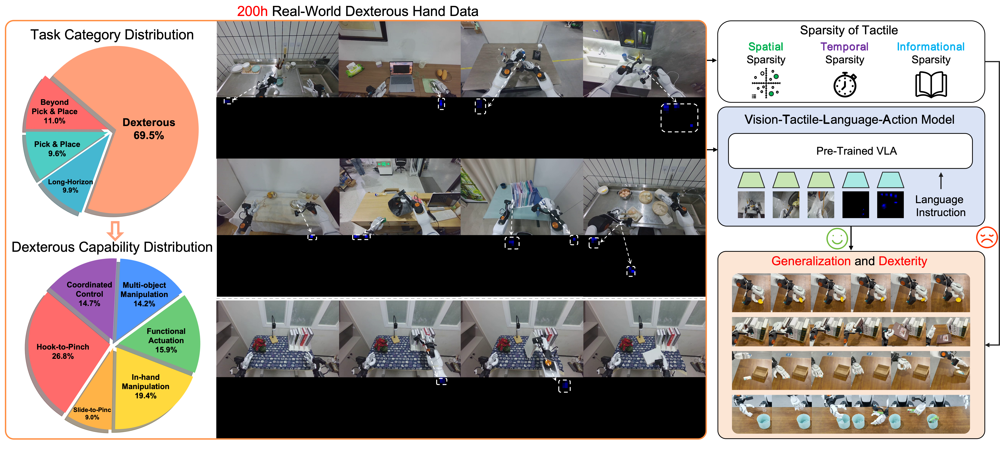

Summary
Dexterous manipulation requires coordinated multi-finger control and effective tactile feedback, yet learning these capabilities remains challenging due to the lack of large-scale real-world data and the difficulty of extracting effective representations from sparse tactile signals. We build a robot platform and teleoperation system to collect a 200-hour bimanual dexterous manipulation dataset with synchronized visual, tactile, and language annotations, comprising 10,576 trajectories across 65 tasks, 69.5% of which involve dexterous multi-finger manipulation. We further propose STAR, an integrated training recipe for vision–tactile–language–action (VTLA) models that addresses the spatial, temporal, and informational sparsity of tactile signals through visual–tactile joint pre-training, sparse-global tactile token representation, and sparse future tactile prediction. Trained on this dataset, STAR achieves a 61% average success rate across four real-world tasks with 100 post-training trajectories per task, demonstrating dexterous performance under task-specific post-training.
Overview

Method

Evaluation Setup